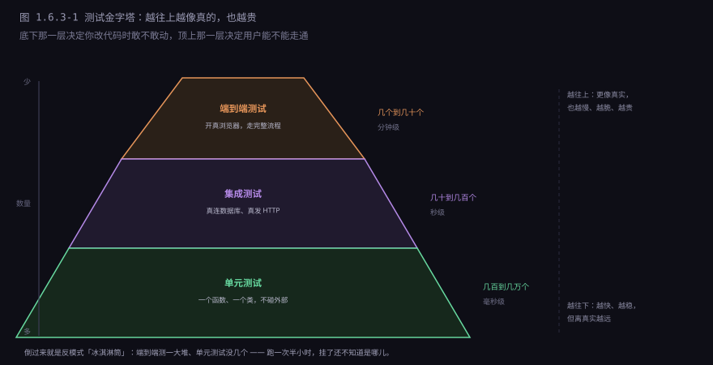
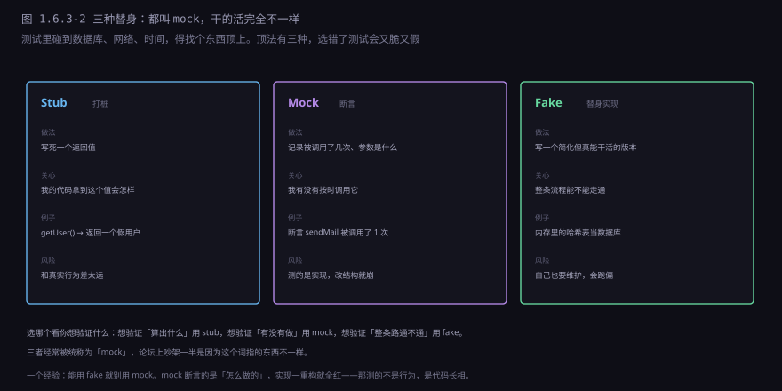
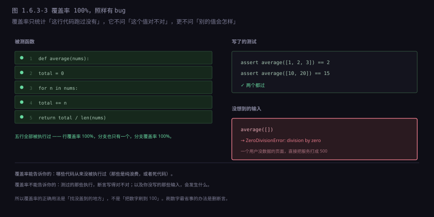
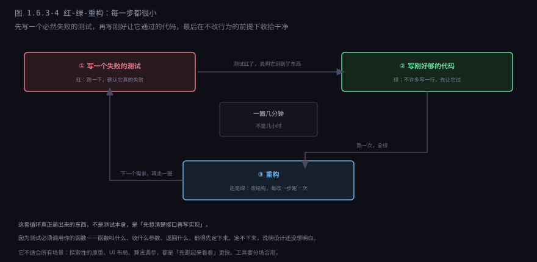
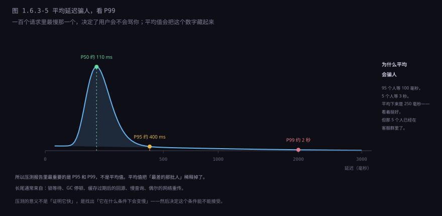
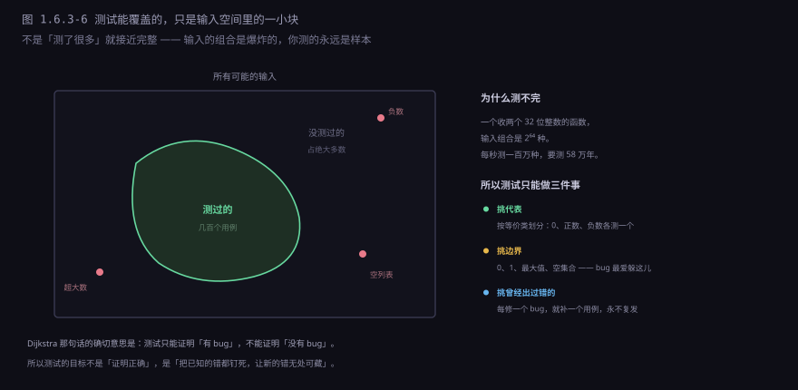

约 0.65 万字 · 6 张图 · 读完你能说清一次测试本质上是几行代码、 为什么单元测试要多而端到端要少、覆盖率为什么会骗人， 以及压测报告里最该看的那两个数字是什么
把所有框架、注解、报告都剥掉，一个测试剩下的东西只有一句： 「拿这个输入跑一遍，结果应该等于这个」。
def test_average():
assert average([1, 2, 3]) == 2
就这么多。没有魔法，也没有「测试专用的运行时」。
assert 在工作原理上就是「条件不成立就抛异常」：
def assert(cond):
if not cond:
raise AssertionError() # 抛出，调用链一路往上，直到有人接住测试框架做的事，就是批量调用这些函数、接住异常、记下哪个失败了、最后打一份报告。 所以「写测试」这件事的门槛其实很低：只要能描述「输入是什么、期望是什么」， 就能写出来，不需要任何特殊工具。
真正难的不是写，是想到该测什么。这件事后面几节都在讲。
既然就是一个断言，那为什么不直接在 main 里写几行 assert 就完事？
因为一旦测试超过十个，四件事会变得无法忍受：
| 问题 | 手写 assert 的后果 | 框架怎么解决 |
|---|---|---|
| 一个失败就中断 | 第一个断言挂了，后面全不跑，你得改一次跑一次 | 每个用例独立捕获，一次跑完全部 |
| 互相污染 | 用例 A 改了全局变量，用例 B 就假失败 | 每个用例前后跑 setup / teardown |
| 不知道挂在哪 | 只有一行 AssertionError，得自己加打印 | 报告里有用例名、期望值、实际值 |
| 全量太慢 | 改一行要等所有检查跑完 | 只跑上次失败的那些、只跑改动相关的 |
这四件事加起来，就是「测试框架」存在的全部理由。 它不让你能测更多东西，它让你在测试变多之后还愿意继续跑。 一个跑一次的测试是资产，一个跑十分钟还没人看的测试是负债。
「单元」这个词没有严格定义，实践中指一个可以独立调用的最小单位： 一个函数、一个类、一个模块。它的特征是不碰外部世界—— 不连数据库、不发网络请求、不读文件、不看当前时间。
这样做的理由很实际：一个不碰外部的测试，跑一次是毫秒级的；碰了数据库就变成几十毫秒， 碰了网络就变成几百毫秒甚至超时。当你有三千个测试时，前者三秒跑完，后者要跑半小时。

一个「好」的单元测试有四个特征，缺一个都会变成负担：
快。单条毫秒级。慢的测试没人愿意跑，不跑就等于没有。
独立。不依赖别的测试留下的状态，也不依赖执行顺序。 能单独跑，也能和别的任意组合跑。
确定。同样的代码跑一百次，结果一样。 不能依赖当前时间、随机数、网络状况——这些东西会让测试变成「偶尔失败」， 而偶尔失败比一直失败更糟：它会训练所有人忽略红色。
只测一件事。一个测试里塞五个断言、测五个场景， 挂了之后你不知道是哪个坏了。拆成五个测试，报告直接告诉你。
写的时候有个通用结构，叫「准备-执行-断言」三段：
def test_withdraw_rejects_when_balance_is_short():
acc = Account(balance=100) # 准备：把世界摆成想要的样子
result = acc.withdraw(150) # 执行：只调一次被测函数
assert result == Err("余额不足") # 断言：只验一个结果
assert acc.balance == 100 # 失败时余额不能变
三段各自只干一件事，好处是失败时一眼能看出是哪一段的假设不成立。
命名也值得花点心思：测试名应该是一句话，说明「在什么条件下、期望什么」。
test_withdraw_rejects_when_balance_is_short 挂了，
你从名字就知道发生了什么；test3 挂了，你得打开文件读代码。
单元测试要求「不碰外部」，可你的函数偏偏要查数据库、要发邮件、要读系统时间。 这时候需要找个东西顶上。顶法有三种，名字经常被混着叫 mock，其实干的活完全不同。

举一个具体的例子。假设有个下单函数，要扣库存、要发确认邮件：
def place_order(user, item, qty):
stock = inventory.reserve(item, qty) # 要连数据库
if not stock:
return Err("库存不足")
mailer.send(user.email, "下单成功") # 要发邮件
return Ok(order_id)三种替身分别能测出不同的东西：
| 替身 | 在测试里怎么写 | 能发现什么 |
|---|---|---|
| Stub | 让 inventory.reserve 永远返回 0 | 库存不足时，对不对 |
| Mock | 断言 mailer.send 被调了 0 次 | 失败路径上有没有误发邮件 |
| Fake | 用一个内存字典当库存表 | 扣减、回滚、并发下单能不能走通 |
一条经验值得记住：能用 fake 就别用 mock。 因为 mock 断言的是「你调用了谁、调了几次、参数是什么」—— 这是实现细节。哪天你把「发邮件」拆成「发邮件 + 记日志」， 或者换了一个邮件库，测试全红，可功能一点没变。
而 fake 断言的是行为：下单成功了、库存少了两件。 实现随便改，只要行为不变，测试就绿。 测试应该锁住「做什么」，不该锁住「怎么做」——这是区分好测试和坏测试最实用的标准。
单元测试有个天然的盲区：它测的是「我的逻辑」，不是「我的逻辑和真实世界能不能对上」。 你用假数据库跑得再顺，也测不出「这个 SQL 在 PostgreSQL 上语法不对」。
集成测试就是把真的东西接上：真数据库、真消息队列、真 HTTP。 它关心的不是某个函数的返回值，而是几个组件拼起来还能不能工作。
这里有个经常被忽略的坑：用内存数据库代替真数据库，会漏掉大量 bug。 H2、SQLite 这类内存库跑得飞快，很多项目拿它跑集成测试， 但它们和 MySQL、PostgreSQL 的差异远比想象中大：
| 差异点 | 内存库通常 | 真实库 |
|---|---|---|
| 事务隔离级别 | 简单，默认就很强 | 各家不同，脏读/幻读行为不一样 |
| 锁与并发 | 几乎不锁 | 行锁、表锁、死锁检测 |
| SQL 方言 | 标准子集 | 窗口函数、JSON、全文索引各有一套 |
| 索引行为 | 常常直接全表扫 | 走不走索引直接决定快慢 |
所以现在的主流做法是测试容器：跑测试时临时起一个真的 PostgreSQL 容器， 测完销毁。启动多花几秒，但测的是真东西。 几秒钟买一个「上线不会因为 SQL 方言炸掉」的保险，非常划算。
端到端（E2E）测试从用户视角出发：开一个真浏览器，点按钮、填表单、看页面变成什么样。 它是最接近真实使用的测试——毕竟用户不会调用你的函数，他只会点。
也是最脆的。原因很朴素：它依赖的东西最多。 前端改一个 CSS 类名、后端改一个接口字段、测试环境的网络抖一下， 都会让它红。而红了之后你还要判断：是真的坏了，还是选择器过期了？
这就是为什么很多团队的做法是「E2E 只覆盖最关键的几条路」—— 注册、登录、下单、支付。这几条挂了是灾难，其它的交给下面两层。
端到端之外还有一种折中手段，前端用得很多：快照测试。 做法是把组件的渲染结果（HTML 或序列化数据）存成一个文件， 下次跑测试时再渲染一遍，和文件比对。不一样就红。
它便宜、写起来快，特别适合「输出很复杂、但我不关心细节、只要别变」的场景： 一个表格组件的 HTML、一份配置的序列化结果、一个编译器生成的中间代码。 第一次跑生成的快照文件，得人眼过一遍——那是唯一一次真的在检查。
风险也在这儿：改了一行样式，几十个快照全红，人会下意识地执行「更新所有快照」。 一键下去，测试全绿，但没人看过新快照长什么样。快照测试的纪律是：每次更新快照，都要真的看一眼 diff。 做不到这一点，它就会退化成「只要代码能跑就算过」的装饰品。
覆盖率是个很诱人的指标：一个百分比，越高越好，还能画成图。 但它衡量的是「代码被执行过没有」，不是「代码对不对」。

三种覆盖率的严格程度递增：
| 类型 | 统计什么 | 漏在哪 |
|---|---|---|
| 行覆盖 | 这一行执行过没有 | 执行过不代表走对了分支 |
| 分支覆盖 | 每个 if 的 true / false 都走过没有 | 组合起来的路径没测 |
| 路径覆盖 | 所有可能的执行路径 | 路径数指数爆炸，实际做不到 |
而且还有更根本的问题：覆盖率测不出「断言写错了」。
你写 assert result == 3，可正确答案是 4，
代码执行了、断言也执行了、覆盖率 100%，测试还是绿的——因为它验的是错的东西。
所以覆盖率的正确用法只有一条：拿它找「从来没被跑到的地方」。 看到一段代码覆盖率是 0，说明要么它是死代码（该删）， 要么它是真的没测（该补）。至于那个百分比本身，到 70% 还是 90%， 和 bug 数量没有线性关系。
常规顺序是「先写代码，再补测试」。测试驱动开发（TDD）把它反过来： 先写一个必然失败的测试，再写刚好让它通过的代码。

「写刚好够的代码」这一条经常被误解成「故意写得烂」。 它的真实意思是不要提前实现你还不需要的东西—— 只让当前这个测试通过，不多写一行。等下一个测试逼你的时候再加。
这套循环真正逼出来的东西，其实不是测试本身，而是「先想清楚接口再写实现」。 因为测试必须调用你的函数：它叫什么、收什么参数、返回什么、失败时怎么表示， 这些都得先定下来。定不下来，说明设计还没想明白—— 而这些问题在写实现之前发现，比写完三千行之后发现，便宜一百倍。
它不是万能的。探索性的原型、UI 布局、算法调参， 都是「先跑起来看看」更快。工具要分场合用， 把 TDD 当成宗教比不写测试更糟。
前面所有测试都在问「对不对」。压测问的是另一个问题： 给它一百倍的压力，它会在哪里先垮。
压测报告里该看四个数字：
| 指标 | 含义 | 为什么重要 |
|---|---|---|
| QPS / TPS | 每秒处理多少请求 | 系统的吞吐上限在哪 |
| 延迟分位数 | P50 / P95 / P99 各是多少 | 用户实际感受到的速度 |
| 错误率 | 多少请求失败了 | 是「变慢」还是「开始丢」 |
| 资源占用 | CPU、内存、连接数、GC 频率 | 瓶颈在哪，离崩溃还有多远 |
其中最容易看错的是延迟。平均值几乎一定骗人：

长尾通常来自几个固定的地方：锁等待（有别的请求占着）、 GC 停顿（内存回收时全世界暂停）、 缓存过期后的回源（正好赶上冷数据）、 慢查询（少数字段没走索引）、 网络重传（丢包之后等超时重发）。 每一个都能把 1% 的请求拖成几十倍慢。
压测的常见错误，几乎都是同一个毛病的变种：把压测当成「跑个数字」。
只压不调。跑出个 QPS 就完事，不看瓶颈在 CPU 还是数据库还是锁。 这样下次还得重新压一遍，什么也没学到。
用生产数据。拿真实用户数据压测，轻则污染统计，重则给真人发消息、扣真钱。
忽略冷启动。刚启动的服务缓存是空的、连接池是空的、JIT 还没编译热点代码。 这时候压出来的数字比稳态差好几倍，但它恰恰是用户能感知到的「发布后第一分钟」。
具体做法上，最有用的一招叫阶梯加压： 从 10 个并发开始，每两分钟翻一倍（10 → 20 → 40 → 80……）， 同时记录每一档的 QPS、P99 和错误率。
并发 QPS P99 错误率
10 950 120 ms 0
20 1900 130 ms 0
40 3700 180 ms 0
80 5200 900 ms 0.2% ← 拐点在这附近
160 5400 4200 ms 6%看第四行到第五行：并发翻倍，QPS 几乎没涨，P99 却翻了四倍多，错误率开始出现。 这个位置就是拐点——系统从「加压力就多干活」变成「加压力只会更堵」。 之后再加并发，吞吐不升反降，因为时间都花在排队和超时重试上了。
找拐点的价值在于：它告诉你安全水位在哪。 拐点在 80 并发，那生产环境的常态就该控制在 40 以下， 留一倍余量给突发流量。不知道拐点在哪，就等于不知道自己离悬崖多远。
测试不是唯一的防线。实际项目里至少还有三样东西在帮你挡 bug， 而且它们挡住的类型各不相同：
类型系统。编译期就能发现「你传了个字符串给要数字的参数」。 这类错误测试也能发现，但前提是你恰好写了那个用例； 类型系统不需要用例，它对所有代码一视同仁。 类型检查是「全量」的，测试是「抽样」的——这是它最大的优势。
代码审查。人看代码能发现机器看不见的问题： 这个命名是不是有歧义、这个抽象是不是过度设计、这个错误处理是不是在掩盖问题。 测试和类型系统都回答不了「这段代码该不该存在」。
静态分析。lint 能发现「定义了没用的变量」「可能为空却没判」「忘了 await」。 这些东西既不是类型错误，也很难写测试覆盖，但确实是 bug 的高发区。
| 防线 | 擅长 | 管不了 |
|---|---|---|
| 类型系统 | 接口契约、数据形状 | 业务逻辑对不对 |
| 静态分析 | 常见错误模式、代码异味 | 运行时状态、并发 |
| 测试 | 行为、边界、回归 | 没想到的输入 |
| 代码审查 | 设计、意图、可维护性 | 规模大的重复检查 |
四者不能互相替代，因为它们覆盖的维度不一样。 一个类型完备的项目照样会算错钱；一个测试覆盖率 90% 的项目照样有安全漏洞。 每道防线都在挡它最擅长的那类问题，剩下的漏给下一道。
这一节最该记住的一句话，来自 Dijkstra： 「测试只能证明有 bug，不能证明没有 bug。」

既然测不完，那测试的意义在哪？在于三件事，每一件都很实际：
一是挑代表。按等价类划分：正数、负数、零各测一个， 因为它们走的是不同分支。不需要测一万个正数，只需要测「正数这一类」。
二是挑边界。0、1、最大值、空集合、只有一个元素—— bug 极大概率躲在这些转折点上。因为写代码的人脑子里想的是「一般情况下」， 边界是事后才补的，而补的时候容易漏。
三是挑曾经出过错的。每修一个 bug，就补一个用例。 这条规矩的价值是复利：三年之后，这个项目的每一个历史伤疤都有一道护栏， 谁也没法再把它弄坏一次。
这一节讲的所有东西，都在回答同一个问题：它做的是不是我们想要它做的事。 单元测试验逻辑，集成测试验拼接，端到端验流程， 压测验它在压力下还守不守规矩。
但还有一类问题，测试完全回答不了：它做得够不够快。
你当然可以在测试里断言「这个函数要在 10 毫秒内跑完」， 但这种测试通常很不可靠——同一条断言，在开发机上过，在 CI 的共享机器上就挂， 因为机器负载不一样。测试环境不是测量环境。
而且更根本的是：测试只能告诉你「超了没有」，不能告诉你「时间花在哪儿了」。 一个接口慢了 200 毫秒，是数据库慢、是 GC 停顿、还是某个循环写得蠢？ 这个问题得用另一类工具回答——它不检查结果，它观察过程。 那就是下一节：性能分析。